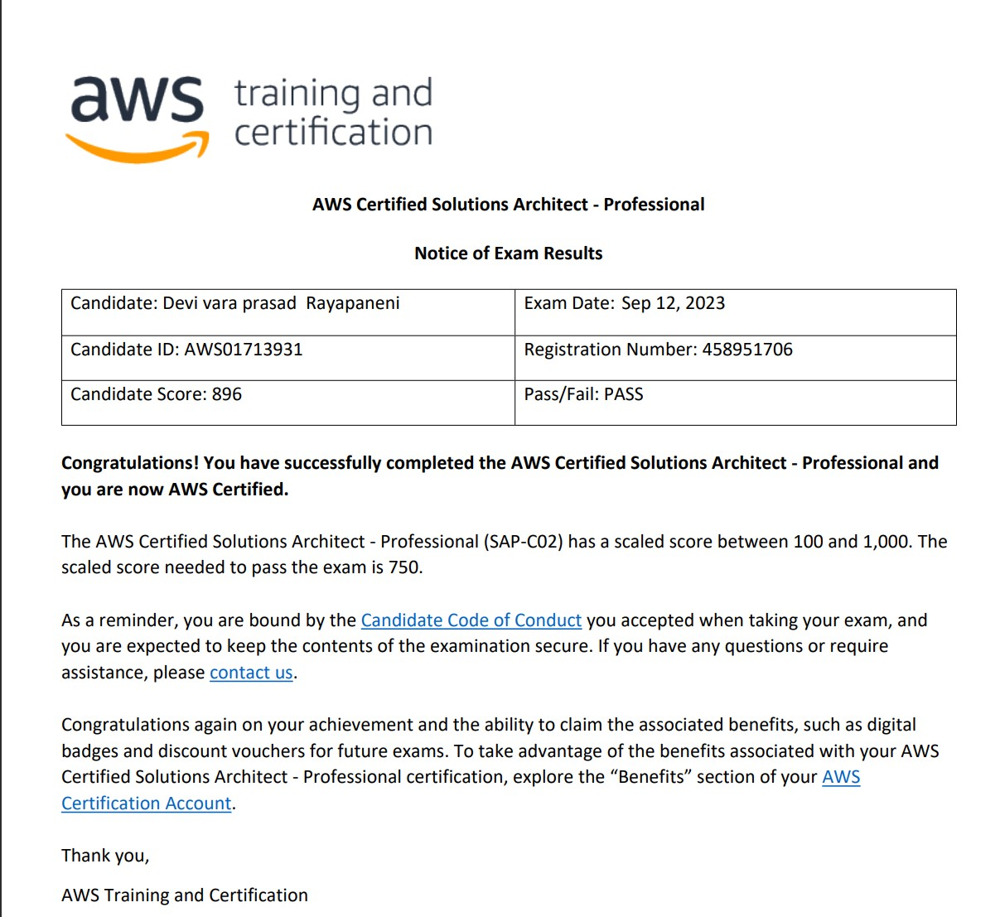

AWS certified solution architect
professional
Becoming an AWS Certified Solutions Architect is a valuable credential for individuals working in cloud computing and AWS environments. Here's an overview of what it entails:
Validation of Skills: Certification validates your expertise and proficiency in designing distributed systems on AWS.
Career Advancement: Opens up opportunities for roles requiring AWS expertise and often leads to better job prospects and higher salaries.
Industry Recognition: AWS certifications are recognized and respected in the industry, enhancing your professional credibility.

Six sigma GREEN belt
(CSSBB)
Six Sigma Green Belt certified professional adept in utilizing DMAIC methodology to drive process improvements, reduce defects, and enhance organizational efficiency through data analysis and implementation of effective solutions.
programming skills:
PYTHON PROGRAMMING: This is my preferred language for data engineering. Python is favored for its simplicity, ease of learning, and rapid development capabilities. In work I commonly used python for data wrangling, exploratory data analysis, and building prototypes of data pipelines. worked with Python's rich ecosystem of data science libraries, including NumPy, pandas, and scikit-learn, makes it well-suited for tasks such as data cleaning, transformation, and machine learning model development. Moreover, Python's flexibility allows data engineers to seamlessly integrate it with other technologies and tools commonly used in the data engineering ecosystem.
R-PROGRAMMING: This is my second preffered language, I have hands-on experience with Statistical analysis, data visualization
SQL:This is my mate from beginning of my career. Experienced in designing and implementing scalable database solutions, optimizing query performance, and ensuring data integrity for efficient data pipelines.
Spark Programming: Proficient in building distributed data processing applications, implementing complex data transformations, and optimizing Spark jobs for high performance in big data environments.
Frontend Developer: Familiar with creating responsive and intuitive user interfaces using HTML, CSS, and JavaScript, with hands-on in modern frontend frameworks like React.js and Angular.